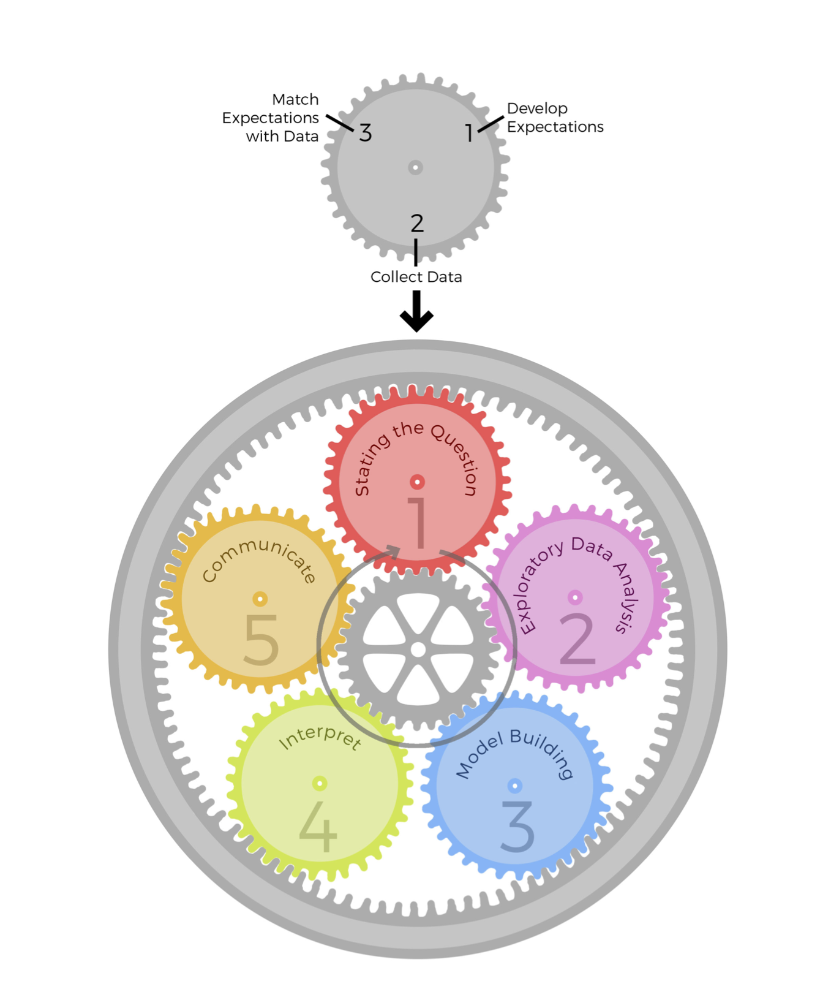

Project: Data Journey Narrative
Characterize the journey that your data took to get to you. (BatesDataJourneysCapturing2016?; Madrigal and Meyer 2021) Some relevant questions to answer might include
- Who generated these data? Why? How?
- What measurement instruments were used to generate these data? What infrastructure has been used to store and transmit the data?
- What was the original intended use of these data? What are some other ways the data have been used?
- How has the mutability/immutability of the data been important to its journey & use? How has its mutability/immutability been created and maintained?
- How will you need to transform the data further for your project? How do the physical and material properties of the data facilitate this, and/or create friction?
- What values have been crystallized in the data? How have power relations and values shaped what is/isn’t included in the data?
- Based on these factors, do the data appear to be fit for purpose? That is, based on what you know so far, do the data appear to be appropriate for answering your research question?
Include references for the sources you use to answer these questions. You can work on this step of the project at the same time as the EDA step, but I will ask you to turn in the data journey narrative first. A good target length for your narrative is 500-1,000 words long, not counting any references.
Exploratory Data Analysis
This book is about exploratory data analysis, about looking at data to see what it seems to say. It concentrates on simple arithmetic and easy-to-draw pictures. It regards whatever appearances we have recognized as partial descriptions, and tries to look beneath them for new insights. Its concern is with appearance, not with confirmation. (John Wilder Tukey 1977)
Exploratory Data Analysis (EDA) is “an attitude, AND a flexibility, AND some graph paper (or transparencies, or both)” (John W. Tukey 1980)
Exploratory and Confirmatory Research
Especially in the wake of the replication crisis, one common distinction is between exploratory and confirmatory research (Wagenmakers et al. 2012)

| Confirmatory | Exploratory |
|---|---|
| hypothesis testing | hypothesis development |
| specified in advance | adaptable |
| algorithmic | free, creative |
| mechanical objectivity (Daston and Galison 2007) |
pure subjectivity? |
| avoids inferential errors | makes errors? |
| rigorous | lacking rigor? |
| real science?? | h*cking around with data?? |
| assumes experimental methods | relevant to all methods |
I agree that it’s important to
- be thoughtful about how much confidence we’re placing in our conclusions
- interpret findings from one study in light of other studies
But the confirmatory/exploratory distinction can overhype the confirmatory side
- Making us too rigid and narrow-minded about what counts as good science
Better Models for EDA I: Developing Phenomena
Bogen and Woodward (1988) by way of Brown (2002)
| Data | Phenomena | Theories/ Causal processes |
|---|---|---|
| Ex: Spreadsheet of numbers, downloaded from Qualtrics | Ex: Correlation between partisanship and sharing Covid misinformation | Ex: Conservative susceptibility to anxiety hypothesis |
| collected | abstracted or extracted from data | postulated |
| not explained | explained by theories | explain phenomena |
| highly local to time, place, sample, procedure | varying scope | universal? |
| “raw,” messy, unwieldy | “processed,” clean, stylized | “laws of nature”? |
EDA as phenomena development
- cleaning messy data
- identifying and mitigating (where possible) errors and idiosyncracies
- identifying local patterns (“local phenomena”)
- not yet claiming these will be stable and appear elsewhere
- not yet worrying (much) about explanations
Better Models for EDA II: Epicycle of Analysis
Peng and Matsui (2016)
- Data analysis is organized into 5 activities
- Each activity involves the same 3-step “epicycle” process
- Develop expectations
- Collect information
- Compare and revise expectations
- Not “the scientific method”! (Peng and Matsui 2016, 4)
- “Highly iterative and non-linear”
- “information is learned at each step, which then informs
- whether (and how) to refine, and redo, the [previous] step …, or
- whether (and how) to proceed to the next step.”
| Goals of EDA | Epicycle step |
|---|---|
| Determine if there are problems with the data | 2. Collecting information |
| Determine whether our question can be answered with these data | 3. Comparing and revising expectations |
| Develop sketch of an answer | 1. Developing expectations |
Discussion
- For each of these models, how well do they fit the way you’ve been taught to do science?
- How do they challenge the way you’ve been taught to do science?